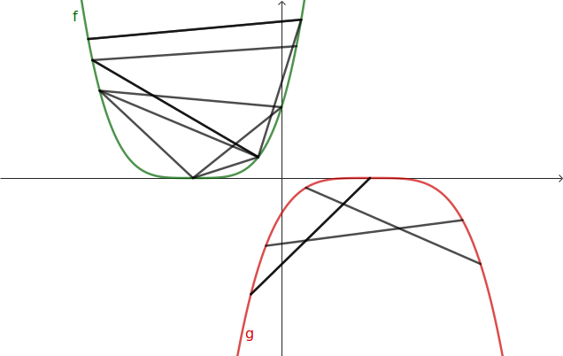
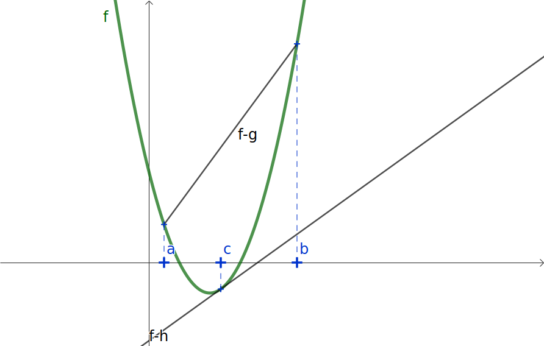
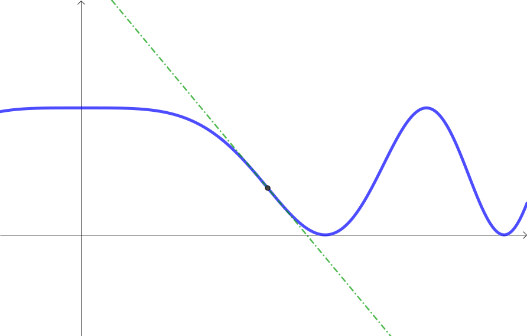
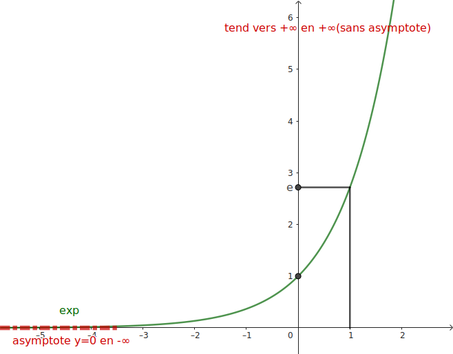
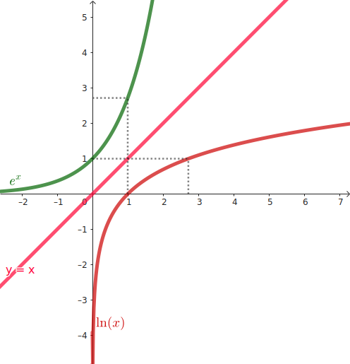
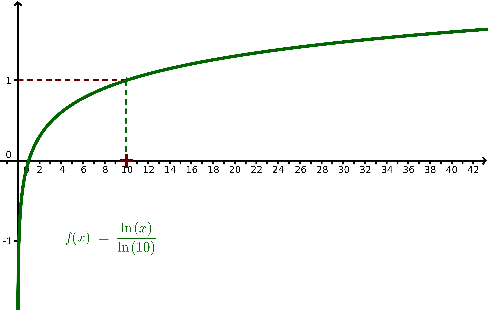
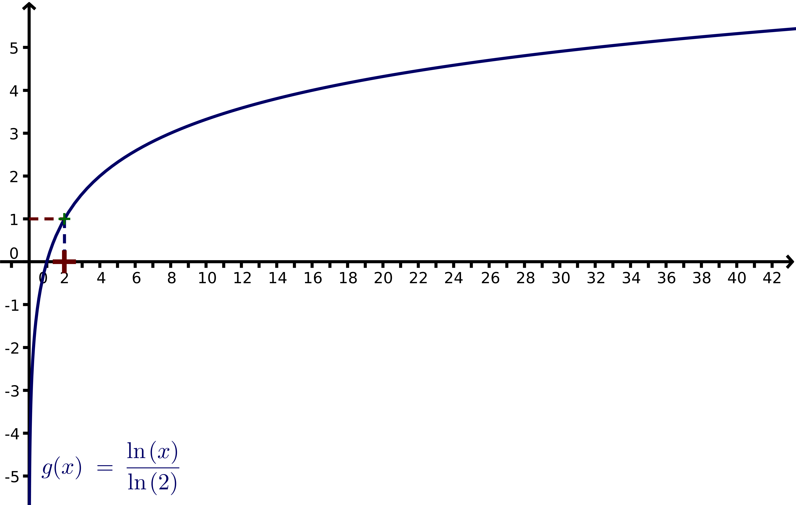
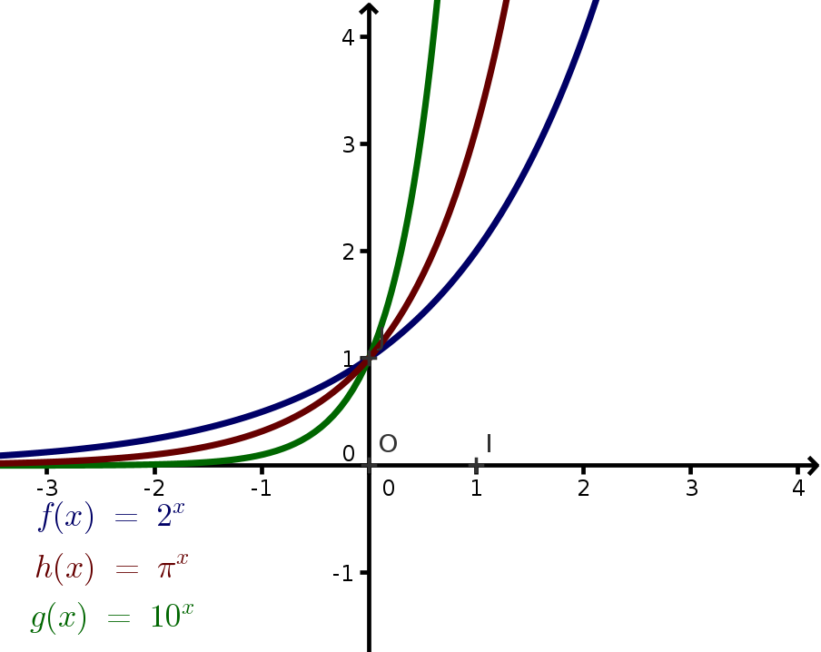

Un segment joignant deux points d'une courbe est une corde de cette courbe.
\(f\) est une fonction définie sur un intervalle.
On dit que \(f\) est convexe lorsque pour toute corde de la courbe de
\(f\), cette courbe est en dessous de chaque corde.
On dit que \(f\) est concave lorsque pour toute corde de la courbe de
\(f\), cette courbe est au dessus de chaque corde.
\(f\) est convexe sur un intervalle \(I\) équivaut à \(-f\) est concave sur \(I\).
Sur le graphique ci-contre, \(f\) est convexe et \(g\) est concave.

Compléter :
La fonction carré est ...
La fonction valeur absolue est ...
La fonction cube ...
Dérivée seconde et convexité
\(f\) est une fonction deux fois dérivable sur un intervalle \(I\) (on peut calculer la dérivée
\(f''\) de
la dérivée \(f'\) de la fonction \(f\)) ; alors, les affirmations suivantes sont équivalentes :
\(f''\) est positive sur \(I\).
\(f'\) est croissante sur \(I\).
la courbe de \(f\) est au dessus de ses tangentes sur \(I\).
\(f\) est convexe sur \(I\).
De même, les affirmations suivantes sont équivalentes :
\(f''\) est négative sur \(I\).
\(f'\) est décroissante sur \(I\).
la courbe de \(f\) est en dessous de ses tangentes sur \(I\).
\(f\) est concave sur \(I\).
Démonstration partielle
\(f\) est une fonction deux fois dérivable sur un intervalle \(I\). On prend \(a<c<b\)
tous dans \(I\) et on définit pour tout \(x\in I\) :
Calculer \(g'\) et \(h'\) ; en déduire que \(f''=g''=h''\)
Dans la propriété précédente :
A⇒B est vraie.
Démontrer que B⇒C et que B⇒D en utilisant les fonctions \(h\) et \(g\).

Obtenir des inégalités
Montrer que la fonction exponentielle est convexe. En déduire que :
Pour tout réel \(x\), on a \(\textrm{e}^x\geqslant 1+x\).
Pour tout réel \(0\leqslant x \leqslant 10\), on a \(\textrm{e}^x\leqslant
\frac{\textrm{e}^{10}-1}{10}x+1\)
(dur) Démontrer que pour tout entier \(n\), on a \(0\leqslant \textrm{e}^\frac{1}{n^2}-1\leqslant
\dfrac{\textrm{e}^\frac{1}{n}-1}{n}\) (utiliser la corde de la courbe de l'exponentielle sur
\(\left[0,\frac{1}{n}\right]\)).
Déterminer des conditions portant sur les coefficients d'un polynôme de degré 4 \(P(x)=ax^4+bx^3+cx^2+dx+e\)
pour qu'il soit convexe sur \(R\).
Point d'inflexion
Point d'inflexion
Lorsque la tangente en un point A à une courbe traverse cette courbe en A, on dit que la courbe
présente un point d'inflexion en A.
Repérer les autres points d'inflexion sur la figure.
Lorsque la dérivée seconde s'annule et change de signe, on est en présence d'un point d'inflexion.
Déterminer le(s) point(s) d'inflexion de la courbe de la fonction donnée par \(f(x)=x^3-3x+2\).

Fonction exponentielle : rappels
Généralités
La fonction exponentielle, notée \(\exp\), est la seule fonction
\(f\),
définie et dérivable sur \(\mathbb{R}\), vérifiant \(f'=f\) et \(f(0)=1\).
\(\exp\) est strictement croissante, tend vers \(0\) en \(-\infty\) (\((Ox)\) est donc
asymptote en
\(-\infty\)) et tend très rapidement vers \(+\infty\) en \(+\infty\).
\(\exp\) est dérivable sur \(\mathbb{R}\) : sa courbe admet des tangentes en tout point.
si \(u\) est une fonction dérivable :
\(\displaystyle\left(\textrm{e}^u\right)'=u'\textrm{e}^u\)

Unicité de la fonction exponentielle (rappel)
\(f\) est une fonction définie et dérivable sur \(\mathbb{R}\) qui
vérifie
:
\(f'=f\).
En dérivant \(h(x)=f(x)\textrm{e}^{-x}\), établir que \(h\) est constante.
en déduire que pour tout \(x\in\mathbb{R}\), on a \(f(x)=f(0)\textrm{e}^x\).
En déduire que la seule fonction dérivable sur \(\mathbb{R}\) qui vérifie \(f'=f\) et \(f(0)=1\) est
l'exponentielle (et que si la contition \(f(0)=1\), n'est pas satisfaite, \(f\) est un multiple de
l'exponentielle).
Calculer les dérivées premières et secondes des fonctions suivantes, donner leur tableau de
variation et rechercher leurs éventuels points d'inflexion :
\(f(x)=\textrm{e}^{1-x^2}\) et \(g(x)=(1-x)\textrm{e}^{-5x}\)
On définit pour tout \(x\) réel :
\(f(x)=(x+3)\textrm{e}^{-x}\) et \(g(x)=(x+1)\textrm{e}^x\) ; le but de cet exercice est de rechercher deux
fonctions \(F\) et \(G\) telles que \(F'=f\) et \(G'=g\) (appelées «primitives»). Méthode : poser \(F(x)=(ax+b)\textrm{e}^{-x}\) et \(G(x)=(cx+d)\textrm{e}^{x}\), calculer
leurs dérivées et en déduire les valeurs de \(a, b, c, d\) correspondantes.
Une fonction \(F\) dérivable telle que \(F'=f\) est appelé une primitive de \(f\).
Les primitives d'une fonction sur un intervalle diffèrent uniquement d'une
constante.
Si \(F\) et \(G\) sont deux primitives de \(f\) sur un intervalle I, démontrer que \(F-G\) est une
constante
(dériver cette
différence !)
Opérations et \(\exp\)
La fonction \(\exp\) respecte les règles connues sur les puissances (elle permet d'étendre la notion
de
puissance à une puissance réelle, non rationelle).
Pour \(a,b\) réels et \(n\) entier :
La fonction exponentielle est continue et strictement croissante de \(\mathbb{R}\) vers
\(\left]0;+\infty\right[\).
Chaque réel \(y>0\) admet, selon le théorème des valeurs intermédiaires, un seul
antécédent \(x\) par exp.
On note \(\ln(y)\) cet unique antécédent \(x\).
On définit ainsi, sur \(\left]0;+\infty\right[\) la fonction \(\ln\).
Par construction, \(\ln\) est la fonction réciproque de \(\exp\), et leurs courbes sont symétriques
par rapport à la droite \(y=x\).
De plus, la courbe de l'exponentielle, fonction dérivable, admet des tangentes en tout point et ces
tangentes ne sont
pas horizontales.
De fait, la courbe de \(\ln\) admet aussi, par symétrie, des tangentes en tout point, non
verticales, ce qui en fait une fonction dérivable.

On appelle \(\ln\)
(logarithme népérien ou naturel) la fonction définie
sur \(\mathbb{R}_+^*=\left]0;+\infty\right[\), réciproque de la fonction exponentielle.
Courbe, variation, signe
Toutes ces affirmations s'expliquent par la symétrie des courbes de l'exponentiel et du logarithme
naturel :
\(\ln\) est strictement croissante et croît lentement vers \(+\infty\) ;
0 est valeur interdite et \((Oy)\) est asymptote (verticale) à la courbe de \(\ln\)
:
les
valeurs
de \(\ln\) tendent vers \(-\infty\) pour \(x\) proche de 0 ;
Pour tout \(x>0\), \(\displaystyle\left(\ln x\right)'=\dfrac{1}{x}\).
Si \(u\) est une fonction dérivable à valeurs strictement positives,
on a
:
\(\displaystyle\left(\ln u\right)'=\dfrac{u'}{u}\)
Démonstration : dériver les deux membres de l'égalité
\(\textrm{e}^{\ln u}=u\)
et en déduire les propriétés précédentes.
Calculer les dérivées des fonctions suivantes : \(f(x)=\ln(1+x^2)\) et
\(g(x)=\ln\left(1+\dfrac{1}{x}\right)\)
Primitive du logarithme naturel
Trouver les valeurs adéquates des réel \(a\) et \(b\) pour que la fonction \(F\) définie pour
\(x>0\) par \(F(x)=ax+bx\ln x\) vérifie \(F'(x)=\ln(x)\).
Primitive de \(\frac{1}{x}\) sur les réels
On fixe deux constantes réelles \(a\) et \(b\) et
on définit \(F(x)=\left\{\begin{array}{l}\ln(-x)+a\textrm{ si }x<0 \\ \ln(x)+b\textrm{ si
}x>0
\\
\end{array}\right.\)
Démontrer que pour tout réel \(x\neq 0\), \(\left(F(x)\right)'=\dfrac{1}{x}\).
En déduire que pour tout réel \(x\neq 0\), \(\left(\ln|x|\right)'=\dfrac{1}{x}\).
En toute rigueur, peut-on dire que « \(\ln\) est la primitive de la fonction inverse » ?
Opérations et \(\ln\)
La fonction \(\ln\) transforme les produits en somme et les quotients en différences : si
\(a,b>0\) et
\(n\)
est
un entier :
\(\ln(ab)=\ln a+ \ln b\)
\(\ln\left(\frac{1}{a}\right)=-\ln a\)
\(\ln\left(\frac{a}{b}\right)=\ln a-\ln b\)
\(\ln\left(a^n\right)=n\ln a\), en particulier \(\ln\left(\textrm{e}^n\right)=n\)
\(\ln\left(\sqrt{a}\right)=\frac{1}{2}\ln a\)
Démonstration :
Démontrer la propriété précédente ; pour le premier item, on pourra dériver
\(\ln(ax)\).
D'après la propriété précédente, on a :
\(\ln(12)=\ln(2^2\times 3)=\ln 2^2 +\ln 3=2\ln2+\ln3\)
Exprimer en fonction de \(\ln2\) et \(\ln3\) les nombres suivants :
\(\ln\left(\frac{32}{9}\right)\)
\(\ln\left(\sqrt{6}\right)\)
\(\ln\left(\frac{1}{6}\right)\)
Attention aux erreurs ! :
\(\ln (a+b)\neq \ln a+\ln b\)
Toute expression à l'intérieur d'un \(\ln\) doit être positive.
Déterminer l'ensemble de définition de : \(f(x)=\ln(1-x)\) et
\(g(x)=\ln\left(1-x^2\right)\)
Démontrer ces limites ; pour le premier item, on pourra poser \(x=\textrm{e}^t\) ; pour le
second, poser \(x=\dfrac{1}{t}\);
pour le troisième, penser que \(\ln\) est dérivable en 1.
Pour \(x>0\), on note
\(\log x = \dfrac{\ln x}{\ln 10}\)
.
\(\log\) possède les mêmes propriétés que \(\ln\) en terme de variation, signe, limites et calcul,
sauf pour la propriété
\(\ln \left(\textrm{e}^n\right) = n\) qui se traduit en
\(\log \left({10}^n\right) = n\) : on
dit que le
logarithme décimal a 10 pour base, alors que le logarithme naturel a le réel e pour base.
Ainsi, un nombre dont le logarithme décimal vaut environ 2,223 est compris entre 102=100
et 103=1000.

En informatique, on utilise le log binaire
\(\log_2 x =\frac{\ln x}{\ln 2}\) ; un nombre dont le
\(\log_2\)
vaut
environ 7,5 doit être codé sur 8 bits (8 caractères zéro ou un).

Plus généralement, on peut construire le \(\log_a\) (logarithme de base \(a\)) en posant
\(\log_a x = \frac{\ln x}{\ln a}\).
Si \(n\) est l'entier immédiatement inférieur à \(\log_a x\), alors \(a^n < x <a^{n+1}\).
En chimie : le pH
Le pH d’une solution aqueuse est défini par la relation
\(pH = - \log\left[H_3O^+\right]\)
où [H3O+] désigne la concentration en ions H3O+. On a toujours
\(0 \leqslant
\textrm{pH} \leqslant 14\).
Calculer le pH d’une solution dont H3O+ \(4{,}0 \times 10^{-5}\) mol/L.
Que devient le pH quand la concentration en ions H3O+ est divisée par 10 ? Par
100 ?
Que devient la concentration quand le pH diminue de 1 ? De 2 ?
Expliquer comment utiliser le logarithme décimal pour trouver le nombre de chiffres d’un nombre
entier ;
avec combien de chiffres s’écrit le nombre 15151789 ?
Notation puissance réelle
Définition
On étend la notation puissance (jusqu'alors utilisée pour des exposants entiers
relatifs)
en posant, pour \(a>0\) et \(b\) réel :
\(a^b = \textrm{e}^{b\ln a}\).
Ainsi, les mêmes règles algébriques que pour les entiers sont valables pour des exposants réels.
Étudier \(f(x)=x^x\) et
\(g(x)={\left(1+\frac{1}{x}\right)}^{x}\).
Fonctions exponentielles de base \(a\)
Soit \(a>1\) fixé et \(x\) réel (variable). En posant \(a^x=\textrm{e}^{x\ln a}\) on définit les
fonctions
exponentielles de base \(a\) pour un exposant réel quelconque.
Elles sont les réciproques des fonctions logarithmes de base
\(a\). En particulier, \(x\mapsto {10}^x \)
est la
réciproque de \(\log\).

En accoustique : le décibel
Le niveau sonore N (en décibels : dB) est :
N\(=20\log\left(\dfrac{p}{p_0}\right)\)
où \(p\) est la pression (en Pa) correspondant au son mesuré
et \(p_0\) une valeur de référence (on prend dans la plupart des
cas le seuil d’audibilité d’un son par une oreille humaine qui
correspond à 20 µPa).
Dans la rue, je passe à 5m d’un marteau-piqueur (100 dB)
et à 2 m d’un joueur de vuvuzela (110 dB). Ai-je mal (seuil
de la douleur : 120 dB) ?
Deux élèves qui chuchotent émettent 32 dB. Calculer combien de dB émettent 34 élèves qui
chuchotent
; comparer à
la voix du professeur (58 dB).
Fonctions puissances (réelles)
Soit \(p\) réel fixé et \(x>0\) (variable). En posant \(x^p=\textrm{e}^{p\ln x}\) on définit les
fonctions
puissance \(p\) (\(p\) réel quelconque).
La fonction réciproque de la fonction \(x\mapsto x^p\) est \(x\mapsto x^{\frac{1}{p}}\).
la fonction racine cubique, réciproque de la fonction cube, est en fait le fonction puissance un
tiers.